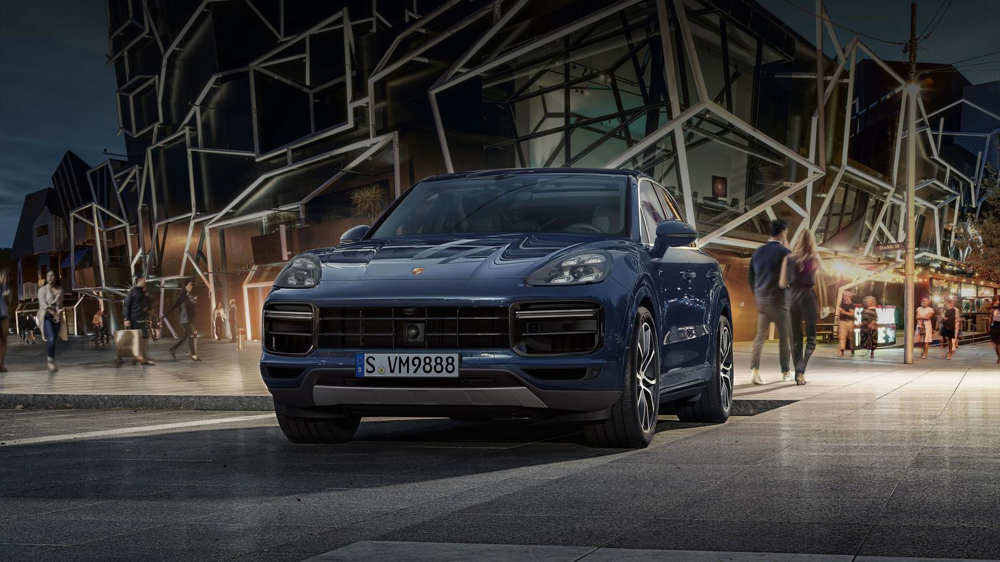

BMW X5

BMW X5 |
|
|---|---|
|
|
BMW X5 M сочетает в себе темперамент спортивного автомобиля в традициях серии M с высокой функциональностью моделей серии X. Его 8-цилиндровый бензиновый двигатель M TwinPower Turbo, отличающийся мощной тягой, 8-ступенчатая АКПП M Steptronic и система интеллектуального полного привода xDrive со специальными М настройками позволяют довести удовольствие за рулем до предела. Впечатляющий экстерьер гарантирует динамичная форма переднего и заднего бамперов, а также входящие в серийную комплектацию 20-дюймовые легкосплавные диски. Великолепный салон этого универсального и одновременно спортивного автомобиля поражает благородными материалами, спортивной формой сидений с увеличенной высотой посадки и характерными для серии М элементами дизайна. BMW X5 M сочетает в себе лучшее из двух миров: выдающуюся мощность и управляемость при одновременной функциональности и практичности в повседневном использовании. |
Porsche Cayenne Turbo S |
|
|---|---|
|  | Благодаря 5 дверям, которые открыты для любых приключений. Благодаря динамичному дизайну и экономичным турбированным двигателям. Благодаря прекрасным коммуникационным возможностям, которые позволяют, сидя за рулем, оставаться на связи со всем миром. Благодаря разносторонности, качеству и совершенным системам помощи, которые предлагают водителю и пассажирам исключительный уровень комфорта. Так Cayenne делает знакомство с Porsche еще более привлекательным и разносторонним. И при этом он сохраняет свое главное качество, оставаясь настоящим спортивным автомобилем. |